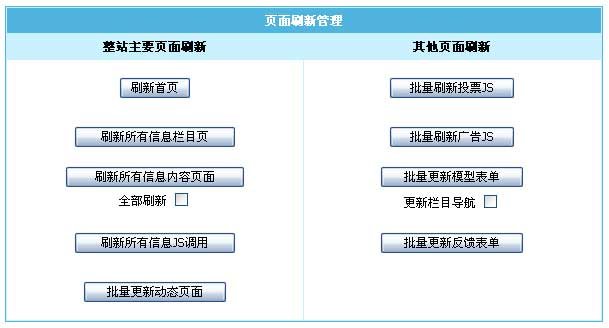

| 三、数据更新界面操作介绍 |
| (一)、页面刷新管理：对整站的所有主要页面进行批量生成操作。 |
|  |
| 整站主要页面刷新 |
| [刷新首页] |
生成网站首页。 |
| [刷新所有信息栏目页] |
生成所有栏目页面和专题页面。 |
| [刷新所有信息内容页面] |
生成所有内容页。 |
| |
全部刷新：把已经生成过的内容页也一起更新。 |
| [刷新所有信息JS调用] |
生成所有JS调用文件。 |
| [批量更新动态页面] |
生成控制面板模板、登陆状态、登陆JS等动态页面。 |
| 其他页面刷新 |
| [批量刷新投票JS] |
生成投票插件的JS文件。 |
| [批量刷新广告JS] |
生成广告插件的JS文件。 |
| [批量更新模型表单] |
生成发布跟投稿表单(一般是网站搬家时使用)。 |
| |
更新栏目导航：更新投稿时选择的栏目。 |
| [批量更新反馈表单] |
生成自定义反馈的表单(一般是网站搬家时使用)。 |
|
| (二)、更新缓存数据：对网站程序缓存进行更新操作。 |
| |
| [更新数据库缓存] |
更新系统的缓存(一般是网站搬家时使用)。 |
| [恢复栏目目录] |
重新建立栏目目录(一般是网站搬家时使用)。 |
| [删除栏目缓存文件] |
重新更新“信息管理”菜单下的栏目列表及“栏目管理”菜单下的管理栏目页面(一般是网站搬家时使用)。 |
| [更新栏目关系] |
一般应用于修改栏目所属父栏目后使用此功能。 |
| [清除临时文件和数据] |
清除临时和缓存文件，可清空产生的临时文件，还有就是更新动态页面模板时使用，用于实时更换模板。 |
|
| (三)、自定义页面刷新：对自定义页面/列表/JS进行批量生成操作。 |
|
| [刷新所有自定义页面] |
生成所有自定义页面。(栏目>自定义页面) |
| [生成所有自定义列表] |
刷新所有自定义列表。(栏目>自定义列表) |
| [刷新所有自定义JS] |
生成所有自定义JS。(栏目>自定义JS) |
|
| (四)、刷新多栏目页面：选择多个指定栏目进行生成操作。 |
|
利用系统提供的多栏目生成功能，您可以同时对多个栏目进行生成设置：
下拉框中显示了当前所有的栏目，同时按住Ctrl（或Shift）键并单击鼠标可选择多个栏目，再单击“开始刷新”按钮进行生成。 |
|
| (五)、刷新多专题页面：选择多个指定专题进行生成操作。 |
|
利用系统提供的多专题生成功能，您可以同时对多个专题进行生成设置：
下拉框中显示了当前所有的专题，同时按住Ctrl（或Shift）键并单击鼠标可选择多个专题，再单击“开始刷新”按钮进行生成。 |
|
| (六)、按条件刷新信息内容页面：按条件生成指定范围的信息内容页面。 |
|
| 刷新数据表 |
选择要生成内容页的数据表。 |
| 刷新栏目 |
选择要生成内容页的栏目(如选择父栏目，将刷新所有子栏目)。 |
| 按时间刷新 |
生成“增加信息时间”在某一时间段的内容页(不填将刷新所有页面)。 |
| 按ID刷新 |
生成“信息ID”在某一ID段的内容页(两个值为0将刷新所有页面)。 |
| 全部刷新 |
把已经生成过的内容页也一起更新。 |
|
| (七)、批量更新相关链接：对于从外部数据导入帝国CMS，需要用此功能来更新信息的相关链接。 |
|
| 数据表 |
选择要更新信息的相关链接的数据表。 |
| 栏目 |
选择要更新信息的相关链接的栏目(如选择父栏目，将更新所有子栏目)。 |
| 按时间更新 |
更新“增加信息时间”在某一时间段的信息的相关链接(不填将更新所有信息)。 |
| 按ID更新 |
更新“信息ID”在某一ID段的信息的相关链接(两个值为0将更新所有信息)。 |
|
如将内容页显示相关链接的条数由5条改至10条，操作是：
1. 单击菜单“栏目”》“管理栏目”子菜单，出现管理栏目界面后，选择需要修改的内容页面所在栏目，单击“修改”操作按钮，
进入修改栏目界面，进入“生成选项”栏目属性页面，修改“相关链接显示 条记录”，单击“提交”按钮完成相关链接条数的修改操作；
2. 进行“批量更新相关链接”操作；
3. 进行“刷新所有信息内容页面（选择全部刷新）”操作，打开前台页面，即可看到您所在的修改了。 |